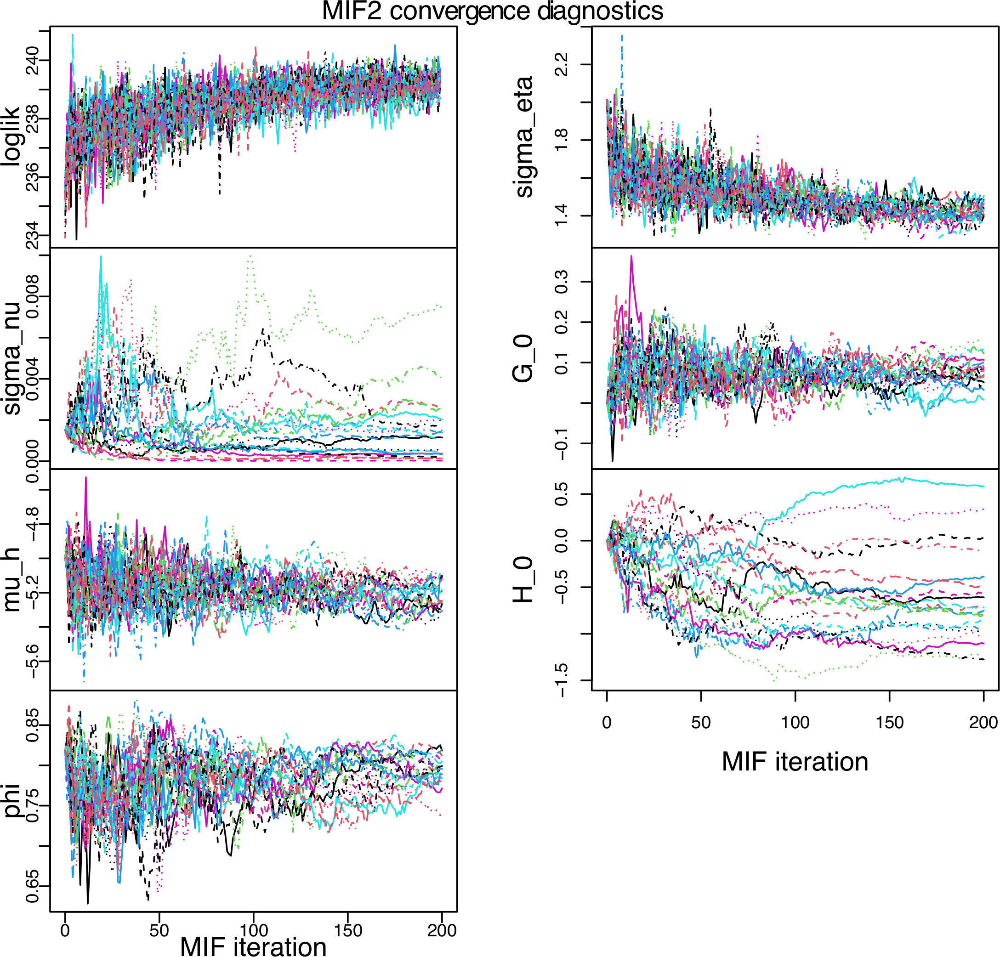

obj |>
mif2(
Nmif=100,
partrans=parameter_trans(log=c("Beta","alpha","delta")),
paramnames=c("Beta","alpha","delta"),
rw.sd=rw_sd(Beta=0.05,alpha=ivp(0.02),gamma=0.05),
cooling.fraction.50=0.1
) -> objQuiz
Q1
When carrying out inference by iterated particle filtering, the likelihood increases for the first 10 iterations or so, and then steadily decreases. Testing the inference procedure on simulated data, this does not happen and the likelihood increases steadily toward convergence. Which of the following is the best explanation for this?
- One or more random walk standard deviation is too large.
- One or more random walk standard deviations is too small.
- The model is misspecified, so it does not fit the data adequately. {#A4c}
- A combination of the parameters is weakly identified, leading to a ridge in the likelihood surface.
- Too few particles are being used.
solution
- All the other issues can cause inference problems, but likely would cause similar problems on simulated data.
When there is a reproducible and stable phenomenon of decreasing likelihood, it generally indicates that the unperturbed model is a worse fit to the data than the perturbed model. Recall that the likelihood calculated by iterated filtering at each iteration corresponds to the model with perturbed parameters rather than the actual postulated model with fixed parameters. If the perturbed model has higher likelihood, it may mean that the data are asking to have time-varying parameters. It may also be a signature of any other weakness in the model that can be somewhat accommodated by perturbing the parameters.
Q2
People sometimes confuse likelihood profiles with likelihood slices. Suppose you read a figure which claims to construct a profile confidence interval for a parameter \(\rho\) in a POMP model with four unknown parameters. Which of the following confirms that the plot is, or is not, a properly constructed profile confidence interval.
- The CI is constructed by obtaining the interval of rho values whose log likelihood is within 1.92 of the maximum on a smoothed curve of likelihood values plotted against \(\rho\).
- The code (made available to you by the authors as an Rmarkdown file) involves evaluation of the likelihood but not maximization.
- The points along the \(\rho\) axis are not equally spaced.
- The smoothed line shown in the plot is close to quadratic.
- @ref(A7a) and @ref(A7d) together.
solution
- If the researchers calculate a sliced likelihood through the MLE and tell you it is a profile, but you are concerned they might have constructed a slice by mistake, it is hard to know without looking at the code. 1 is the proper construction of a profile if the points are maximizations over the remaining parameters for a range of fixed values of rho. However, if the code does not involve maximization over other parameters at each value of rho, it cannot be a proper profile. It could be a slice accidentally explained to be a profile, and with a confidence interval constructed as if it were a profile.
Q3
Which of the following are true?
- A profile likelihood must lie above every slice.
- Confidence intervals can be read from likelihood slices.
- A poor man’s profile must lie above the true profile.
- A poor man’s profile must lie below the true profile.
solution
A is true. B is not true in general. If our model depends on a single scalar parameter, then a slice and a profile are the same thing. C is false. D is true.

Q4
The iterated filtering convergence diagnostics plot shown above come from a [ What is the best interpretation?
- Everything seems to be working fine. The likelihood is climbing. The replicated searches are giving consistent runs. The spread of convergence points for \(\sigma_{\nu}\) and \(H_0\) indicates weak identifability, which is a statistical fact worth noticing but not a weakness of the model.
- The consistently climbing likelihood is promising, but the failure of \(\sigma_{\nu}\) and \(H_0\) to converge needs attention. Additional searching is needed, experimenting with {} values of the random walk perturbation standard deviation for these parameters to make sure the parameter space is properly searched.
- The consistently climbing likelihood is promising, but the failure of \(\sigma_{\nu}\) and \(H_0\) to converge needs attention. Additional searching is needed, experimenting with {} values of the random walk perturbation standard deviation for these parameters to make sure the parameter space is properly searched.
- The consistently climbing likelihood is promising, but the failure of \(\sigma_{\nu}\) and \(H_0\) to converge needs attention. This indicates weak identifiability which cannot be solved by improving the searching algorithm. Instead, we should change the model, or fix one or more parameters at scientifically plausible values, to resolve the identifiability issue before proceeding.
- Although the log likelihood seems to be climbing during the search, until the convergence problems with \(\sigma_{\nu}\) and \(H_0\) have been addressed we should not be confident about the successful optimization of the likelihood function or the other parameter estimates.
solution
- All searches are finding parameters with consistent likelihood. The discrepancies of a few log likelihood units put the parameter values within statistical uncertainty according to Wilks’s Theorem. Therefore, the spread in the parameter estimates reflects uncertainty about the parameter given the data, rather than a lack of convergence.
That perspective suggests that the goal of the Monte Carlo optimizer is to get close to the MLE, measured by likelihood, rather than to obtain it exactly. Independent Mont Carlo searches can be combined via a profile likelihood to get a more exact point estimate and a confidence interval.
Wide confidence intervals, also called weak identifability, are not necessarily a problem for the scientific investigation. Some parameters may be imprecisely estimable, while others can be obtained more precisely, and part of the analysis is to find which is in each category. It may also be of interest to investigate what extra precision can be obtained on one parameter by making assumptions about the value of another, as in @ref(A15d), but this is not mandatory for proper inference.
Overall, the convergence plots here look good. The plots show that the seaches are all started from a single high likelihood starting point. Now this has been done successfully, a natural next step would be to start some searches from more diverse starting points to look for any global features missed by this local search.
Q5
The iterated filtering convergence diagnostics plot shown above come from a [ calculated using \(10^3\) particles. What is the best interpretation?
- Everything seems to be working fine. There is a clear consensus from the different searches concerning the highest likelihood that can be found. Therefore, the search is doing a good job of maximization. Occasional searches get lost, such as the purple line with a low likelihood, but that is not a problem.
- The seaches obtain likelihood values spread over thousands of log units. We would like to see consistent convergence within a few log units. We should use more particles and/or more iterations to achieve this.
- The seaches obtain likelihood values spread over thousands of log units. We would like to see consistent convergence within a few log units. We should compare the best likelihoods obtained with simple statistical models, such as an auto-regressive moving average model, to look for evidence of model misspecification.
- The seaches obtain likelihood values spread over thousands of log units. We would like to see consistent convergence within a few log units. We should look at the effective sample size plot for the best fit we have found yet, to see whether there are problems with the particle filtering.
- All of 2, 3, and 4.
solution
- The authors of this project were able to show evidence of adequate global maximization for their model, but their maximized likelihood was 47 log units lower than ARMA model. The wide spread in likelihood, thousands of log units, shown in this convergence plot suggests that the numerics are not working smoothly. This could mean that more particles are needed: \(10^3\) particles is relatively low for a particle filter. However, if the model fit is not great (as revealed by comparison against a benchmark) this makes the filtering harder as well as less scientifically satisfactory. If the model is fitting substantially below ARMA benchmarks, it is worth considering some extra time on model development. Identifying time points with low effective sample size can help to identify which parts of the data are problemtic for the model to explain.
Q6 {Q:mif2_call1}
In the following call to mif2, which of the statements below are true? You may assume that obj is a pomp object with parameters alpha, Beta, gamma, and delta.
- 50 IF2 iterations will be performed.
Betaandalphaare estimated on the log scale.gammais not estimated.deltais not estimated.- The magnitude of the perturbation on
Betaat the end of the run will be \(0.05{\times}0.1^{100}=5{\times}10^{-102}\). - The magnitude of the perturbation on
gammaat the end of the run will be \(0.05{\times}0.1^{100/50}=5{\times}10^{-4}\). alphais an initial-value parameter; it will be perturbed only at the beginning of the time series.- After the call,
objis an object of classmif2d_pomp.
solution
A is false; 100 iterations will be performed. B is true. C is false. Since a random-walk sd is provided for gamma, it will be estimated. It will be estimated on the natural scale, since no transformation is given. D is true. Although it is (unnecessarily) transformed, delta will receive no perturbations and will thus remain fixed at whatever value it has to begin with. E is false. F is true. G is true. H is true.
Q7 {Q:mif2_call2}
Assume that obj is the result of the call in @ref(Q:mif2_call1). Which of the statements below best describes what happens as a result of the following call?
obj |>
mif2(
rw.sd=rw_sd(Beta=0.05,alpha=ivp(0.02)),
cooling.fraction.50=0.2
)- 100 more IF2 iterations will be performed.
- The settings of the previous calculation are re-used, with the exception of
rw.sdandcooling.fraction.50. - The starting point of the new calculation is the end point of the old one.
Betaandalphaare estimated on the log scale.gammais not estimated.deltais not estimated.- The cooling occurs more quickly than in the previous call.
solution
A is true. B is true. C is true. D is true. The parameter transformations supplied in the earlier call are preserved. E is true. F is true. G is false. After 100 iterations, the perturbations are smaller than they were at the outset, by a factor of \(0.2^{100/50}=0.04\).